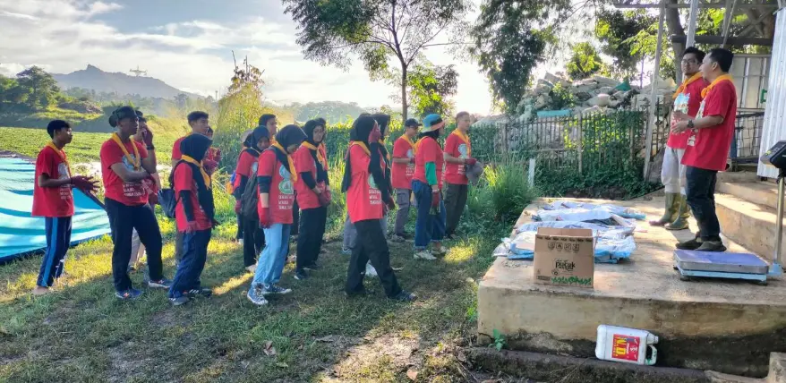
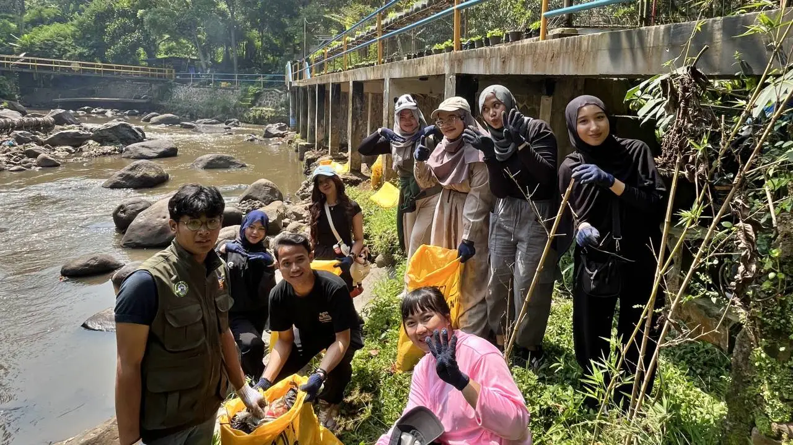
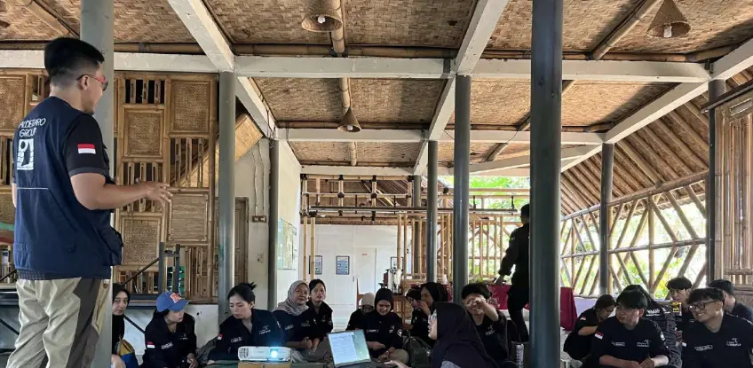

Berbasis 9 penelitian terpublikasi SINTA. 2.343 kg sampah terdokumentasi. Program aktif bersama kampus dan korporasi di Bandung & Jakarta.
Kami merespons di hari kerja yang sama
Sebagian besar program CSR lingkungan tidak menghasilkan data yang terstruktur dan terdokumentasi. SatuBumi mengubah setiap River Cleanup menjadi laporan kegiatan dengan data kuantitatif sampah per event, jumlah peserta, koordinat lokasi, dan metodologi yang sudah terpublikasi dalam 9 penelitian terindeks SINTA. Data yang dapat mendukung pelaporan sustainability Anda.
Kami akan menghubungi Anda di di hari kerja yang sama dan kami siapkan waktu diskusi program untuk Anda.
Chat WhatsApp SekarangCari kegiatan sosial-lingkungan yang bisa dipertanggungjawabkan ke kemahasiswaan, ada dokumentasinya, dan bermakna untuk peserta? River Cleanup SatuBumi sudah dilakukan bersama UNPAD, ITB, ARS University, dan kampus lainnya di Bandung.



Pernah berkolaborasi bersama mahasiswa dari UNPAD · ITB · ARS University · Forum OSIS Bandung Barat · dan kampus lainnya
Sertifikat digital untuk setiap peserta, diterbitkan di hari yang sama
Dokumentasi foto & video profesional, siap untuk laporan kemahasiswaan dan media sosial
Alat & logistik siap pakai, kamu hanya perlu datang
Kami akan menghubungi Anda di di hari kerja yang sama dengan informasi pricelist, kuota, dan jadwal kegiatan.
Chat WhatsApp Sekarangkg sampah Citarum terdokumentasi (2024–2025)
Penelitian terpublikasi SINTA
Peserta River Cleanup luring (2025)
Peserta webinar & program daring (2025)
Institusi yang pernah berkolaborasi
Kegiatan terlaksana di 2025
Kami pernah berkolaborasi dengan institusi-institusi berikut dalam kegiatan SatuBumi Lestari.
| Tanggal | Kegiatan / Kolaborator | Sampah Terkumpul |
|---|---|---|
| 3 Des 2024 | ARS University | 82,78 kg |
| 11 Jan 2025 | KKN UNPAD | 242,84 kg |
| 19 Jan 2025 | Citarum Youth Camp | 117,60 kg |
| 26 Apr 2025 | Forum OSIS Bandung Barat | 84,94 kg |
| 30 Apr 2025 | HPSN Bandung Barat terbesar | 945,00 kg |
| 21 Mei 2025 | Waste4Change & Haleon | 490,30 kg |
| 28 Mei 2025 | STP ARS University | 134,17 kg |
| 30 Nov 2025 | SRE ITB | 160,83 kg |
| 6 Des 2025 | CIMSA UNPAD | 84,80 kg |
| Total | 2.343,26 kg |
Tabel di atas mencakup 9 kegiatan River Cleanup dengan data sampah terverifikasi. Total 18+ kegiatan di 2025 mencakup kegiatan webinar dan narasumber.
Semua yang perlu Anda tahu sebelum memutuskan.
Untuk Korporasi
Untuk Kampus & Mahasiswa
Kampus, sekolah, atau korporasi. Kami siapkan program yang sesuai kebutuhan Anda.
Atau langsung chat: wa.me/62818856993